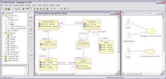
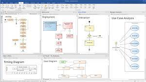
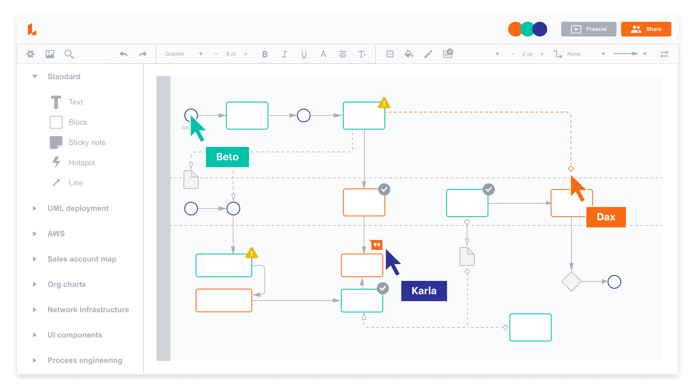

Rational Rose on Rational Software'i visuaalse modelleerimise tööriist, mis toetab objektorienteeritud modelleerimist ja kontrollitud iteratiivset arendust. (See on toode, millega BEA Rose Expert "ühendab".) Rose'i mudeliskeemi arhitektuur hõlbustab järgmiste objektide modelleerimiskeelte ja tähistuste kasutamist objektorienteeritud analüüsi ja disaini jaoks:
See programm võimaldab:
Saame luua klassidiagramme, et näidata, millised klassid on süsteemis olemas ja kuidas need omavahel seotud on.
Rational Rose võimaldab meil näidata erinevaid seoseid klasside vahel, nagu üldistamine, reaalsustamine, kompositsioon jne.
Programm võimaldab meil visualiseerida andmeflowsid süsteemis, näidates, kuidas andmed liiguvad läbi erinevate komponentide ja klasside.
|

Enterprise Architect on kontseptuaalne skeem, mis
määratleb organisatsiooni struktuuri ja tööd
ja aitab otsustada, kuidas saab organisatsioon
kõige toimivamalt saavutada
oma praegusi ja tulevasi eesmärke
See programm võimaldab:
Kasutajatel luua diagramme, mis kujutavad organisatsiooni struktuuri erinevaid aspekte, sealhulgas osakondade, töötajate, rollide ja nende vaheliste seoste.
Programm võimaldab kasutajatel määratleda organisatsiooni eesmärke ja eesmärkide saavutamiseks vajalikke meetmeid.
|

Lucidchart on veebipõhine diagrammileht, mis võimaldab kasutajatel luua mitmesuguseid visuaalseid esitusi, sealhulgas voo- ja andmevoodi diagramme. Sellel platvormil on intuitiivne kasutajaliides ja võimalus teha koostööd reaalajas, mis muudab selle populaarseks valikuks süsteemi arhitektuuriliste kontseptsioonide visualiseerimiseks ja jagamiseks. Tänu reaalajas koostöövõimalustele saavad meeskonnaliikmed hõlpsasti üheskoos töötada ning kiiresti luua ja kohandada diagramme, mis omakorda parandab suhtlust ja produktiivsust meeskonnas.
See programm võimaldab:
Kasutajatel luua erinevaid diagramme, sealhulgas orgaanilisi, andmevoogusid, vooluahelaid, orgaanilisi, võrgu- ja teisaldatavaid diagramme.
Valmis diagramme saab jagada teistega mitmel viisil, sealhulgas linkide või sisseehitatud koodide abil. Samuti saab neid eksportida erinevatesse failiformaatidesse, nagu PDF, PNG, JPEG või SVG.
|
